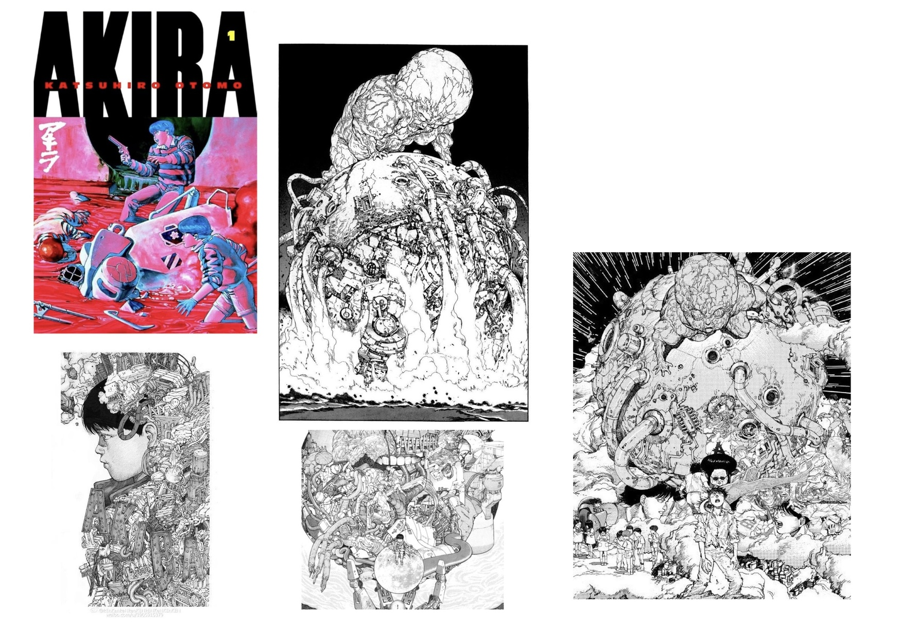
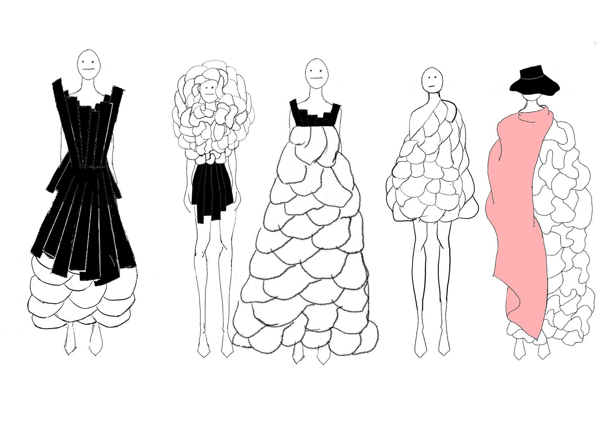
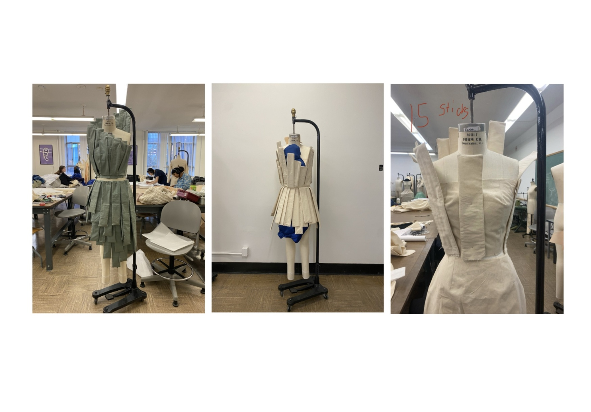
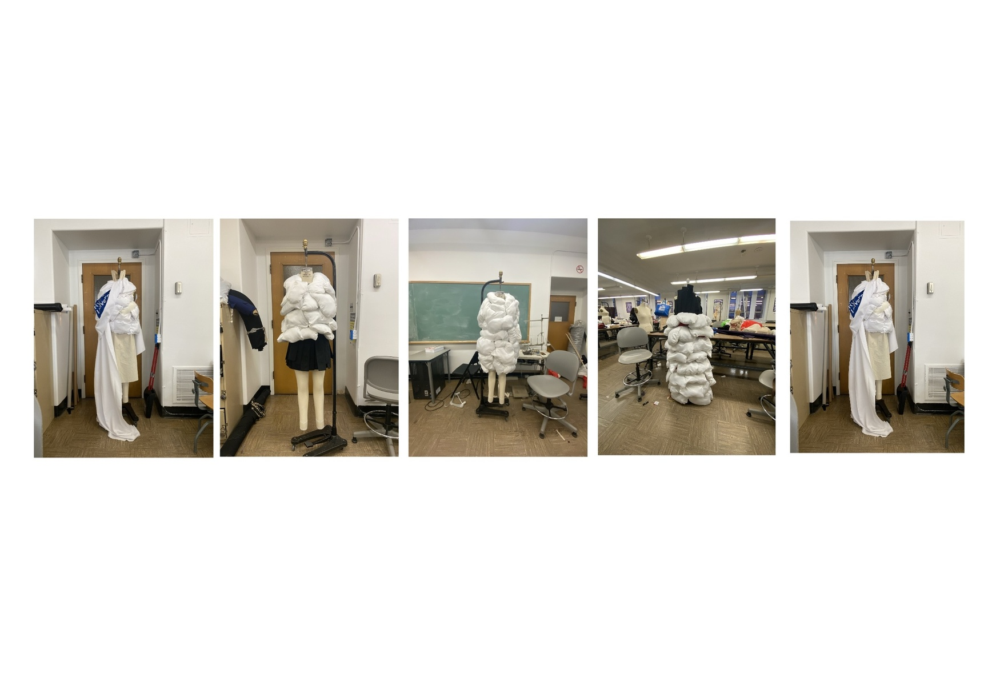
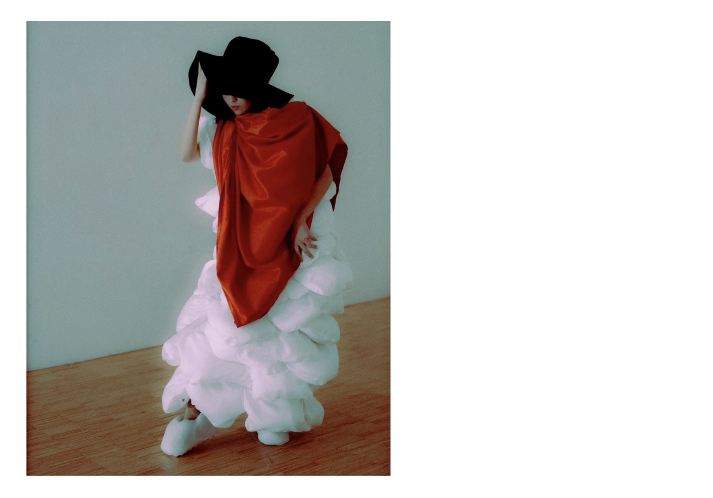
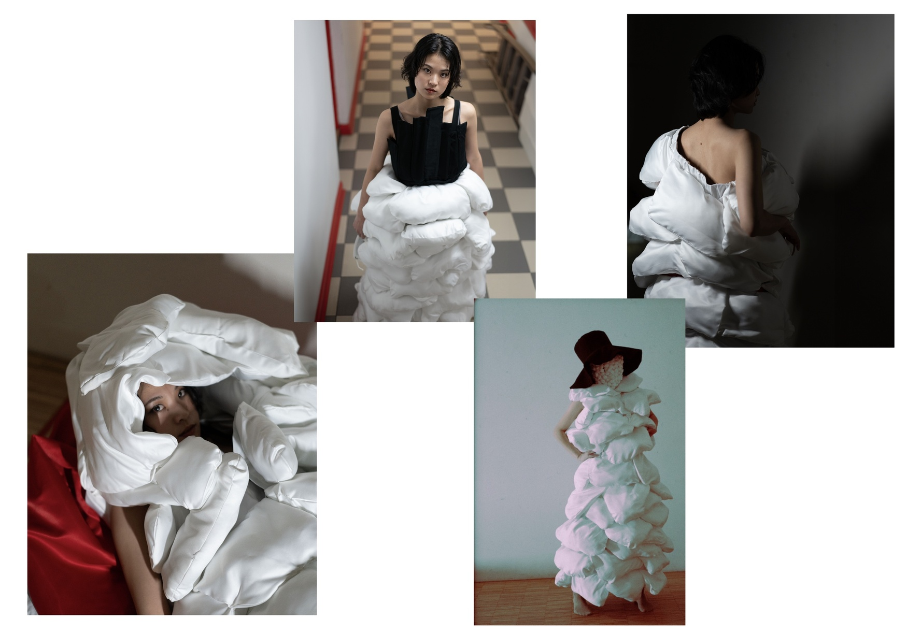
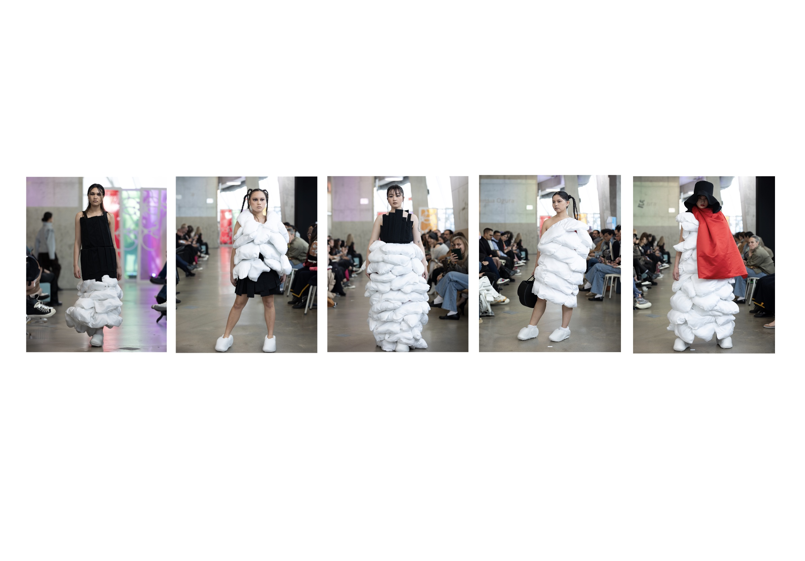

Design Concept

The Mutation collection explores themes of growth and transformation, drawing inspiration from the film Akira.
The designs focus on exaggerated volume and evolving forms, reflecting the physical and psychological transformation of the character Tetsuo Shima. As his power increases, his body expands beyond control, ultimately leading to his destruction.
This narrative parallels my own experience during my final year of university. As I gained independence and control over my decisions, I became aware of both the potential and the responsibility that comes with it. The collection reflects this tension, questioning whether growth leads to control and maturity, or to imbalance and self-destruction.
Sketches

Process

I wanted to experiment with structure and verticality to reflect the dense, towering buildings seen in Neo Tokyo in the film Akira. A range of construction methods were explored, including sewable fusing, plastic boning, and wooden dowels.
I also tested different arrangements of the vertical elements to ensure they did not obstruct the body or become too heavy to wear, while still conveying a sense of compression. The aim was to balance wearability with the visual effect of being enclosed or overwhelmed.

This stage of experimentation focused on enveloping the wearer in volume. The concept was inspired by the final scene of Akira, where Tetsuo expands uncontrollably and is ultimately consumed by his own power.
Volume was created using irregularly shaped fabric forms filled with batting, allowing the garment to appear large and exaggerated without becoming excessively heavy. A key challenge was the placement and distribution of this volume — ensuring it appeared overwhelming and dense, while still maintaining balance and an aesthetically considered form.
Final

The collection is built around a monochromatic palette of black and white, with accents of red. The black and white reference the original manga format of Akira manga, while the red draws from the bold title typography seen on its covers.
The progression of the collection moves from predominantly black garments to increasingly white ones. This transition reflects a narrative of choice and transformation. When read from Look 1 to Look 5, the collection suggests a path of growth. When read in reverse, it presents an alternative narrative of decline, where power leads to loss of control.
Black linear elements represent structure in both education and life. White forms, which become more dominant in later looks, represent freedom and expansion. However, as seen in Akira, unchecked growth can become destructive, reinforcing the tension between control and excess.

